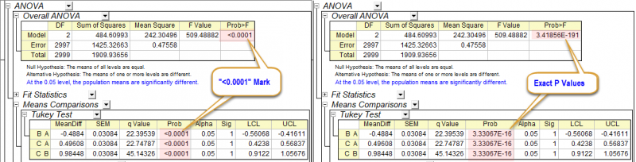

FAQ-1156 ANOVAツールで「正確なp値」を取得するには?
get-Exact-P-Values
最終更新日：2022/10/23
Origin 2023 から、有意性を示す際に、p値が0.0001未満の場合は分散分析のレポートで<0.0001として表示されます。
「正確なp値」をレポートで表示したい場合、以下の操作でシステム変数@SPDを0に変更します。
- .環境設定: システム変数を選択します。
- .システム変数ダイアログが開いたら、SPDおよび0を入力します。
- .Originを再起動します
- 保存したOPJUで結果を再計算するか、統計ツールを再度実行します。
- 
キーワード:p値, P値, 確率, 有意性, 有意